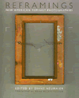

| 
|
Affirmative
Action and the University
A Philosophical Inquiry
Cahn, Steven M.
Philosophical debates on equality in the university
New in Paperback!
320 pp • 6x9 • Spring 1993
paper 1-56639-399-X
EAN 978-1-56639-399-7
|
|
|
African
Intellectual Heritage
A Book of Sources
Asante, Molefi Kete, and Abu S. Abarry
This comprehensive volume brings together documents from the richly
textured intellectual history of Africa and the diaspora
848 pp • 7x10 • Fall 1995
paper 1-56639-403-1
EAN 978-1-56639-403-1
cloth 1-56639-402-3
EAN 978-1-56639-402-4
|
|
|
The
Braves Encyclopedia
Caruso, Gary
The complete story of the oldest continuously operating professional
sports franchise in America
544 pp • 9x12 • Fall 1995
cloth 1-56639-384-1
EAN 978-1-56639-384-3
|
|
|
Bridge
of Light
Yiddish Film between Two Worlds
Hoberman, J.
Critically acclaimed history of Jewish Film reissued in paper edition
New in Paperback!
416 pp • 8x9.25 • Fall 1995
paper 1-56639-404-X
EAN 978-1-56639-404-8
|
| 
|
Broken
Promise
The Subversion of U.S. Labor Relations Policy, 1974-1994
Gross, James A.
This inside look at government regulations analyzes the failure
of the Wagner-Taft-Hartley Act
422 pp • 6x9 • Fall 1995
cloth 1-56639-325-6
EAN 978-1-56639-325-6
|
|
|
Caribbean
Currents
Caribbean Music from Rumba to Reggae
Manuel, Peter, Kenneth Bilby, and Michael Largey
A fascinating wide-ranging survey of Carribean music forms
288 pp • 6x9 • Fall 1995
paper 1-56639-339-6
EAN 978-1-56639-339-3
cloth 1-56639-338-8
EAN 978-1-56639-338-6
|
|
|
Counties
in Court
Jail Overcrowding and Court-Ordered Reform
Welsh, Wayne N.
A systematic analysis of court-ordered jail reform with a pragmatic
model for change
288 pp • 6x9 • Fall 1995
paper 1-56639-341-8
EAN 978-1-56639-341-6
cloth 1-56639-340-X
EAN 978-1-56639-340-9
|
|
|
Creating
the Countryside
The Politics of Rural and Environmental Discourse
DuPuis, E. Melanie, and Peter Vandergeest
People active in regional environmental crises discuss the destruction,
conservation, and creation of the countryside
360 pp • 6x9 • Fall 1995
paper 1-56639-360-4
EAN 978-1-56639-360-7
cloth 1-56639-359-0
EAN 978-1-56639-359-1
|
|
|
Cultural
Politics and Social Movements
Darnovsky, Marcy, Barbara Epstein, and Richard Flacks
Bridging the worlds of activism and academia—this volume combines
social movement theory with the real experiences of activists
384 pp • 6x9 • Fall 1995
paper 1-56639-323-X
EAN 978-1-56639-323-2
cloth 1-56639-322-1
EAN 978-1-56639-322-5
|
|
|
Dangerous
Knowledge
The JFK Assassination in Art and Film
Simon, Art
An intriguing work of cultural criticism on the contemporary meaning
and influence of images from the JFK assassination
280 pp • 5.25x9 • Fall 1995
paper 1-56639-379-5
EAN 978-1-56639-379-9
cloth 1-56639-378-7
EAN 978-1-56639-378-2
|
|
|
Derrida
and Wittgenstein
Garver, Newton, and S. C. Lee
A critical comparison of two influential philosophers' appraches
to language
New in Paperback!
264 pp • 5.5x8.25 • Spring 1994
paper 1-56639-374-4
EAN 978-1-56639-374-4
|
|
|
Droppin'
Science
Critical Essays on Rap Music and Hip Hop Culture
Perkins, William Eric
Leading authorities write on the complex—and sometimes controversial—history,
politics, and culture of rap and hip hop
288 pp • 6x9 • Fall 1995
paper 1-56639-362-0
EAN 978-1-56639-362-1
cloth 1-56639-361-2
EAN 978-1-56639-361-4
|
|
|
Environmental
Change
Federal Courts and the EPA
O’Leary, Rosemary
An examination of the impact of federal court decisions on the
policies and administration of the EPA
New in Paperback!
280 pp • 5.5x8.25 • Fall 1993
paper 1-56639-396-5
EAN 978-1-56639-396-6
|
|
|
An
Essay on African Philosophical Thought
The Akan Conceptual Scheme
Gyekye, Kwame
African philosopher Gyekye defines the main principles of a distinct
African philosophy
Revised Edition
296 pp • 5.5x8.25 • Fall 1995
paper 1-56639-380-9
EAN 978-1-56639-380-5
cloth 1-56639-383-3
EAN 978-1-56639-383-6
|
|
|
Evil
and the Evidence for God
The Challenge of John Hick's Theodicy
Geivett, R. Douglas, and John Hick
A new theodicy embracing the Augustinian tradition of free will
as the touchstone for evil
New in Paperback!
288 pp • 6x9 • Fall 1993
paper 1-56639-397-3
EAN 978-1-56639-397-3
|
|
|
The
Feel of Silence
Tucker, Bonnie Poitras, and Frdderic Hafferty
The compelling memoir of a profoundly deaf woman lawyer and professor
surviving the ironies and trials of accommodating a hearing world
232 pp • 6x9 • Fall 1995
paper 1-56639-352-3
EAN 978-1-56639-352-2
cloth 1-56639-351-5
EAN 978-1-56639-351-5
|
|
|
A
Fine Romance
Five Ages of Film Feminism
Mellencamp, Patricia
A challenging look at twenty years of feminist film theory
344 pp • 6x9 • Fall 1995
paper 1-56639-401-5
EAN 978-1-56639-401-7
cloth 1-56639-400-7
EAN 978-1-56639-400-0
|
|
|
God
in the Street
New York Writing from The Penny Press to Melville
Bergmann, Hans
New York City, as literary subject, sets the stage for this study
of urban literature
272 pp • 6x9 • Fall 1995
paper 1-56639-358-2
EAN 978-1-56639-358-4
cloth 1-56639-357-4
EAN 978-1-56639-357-7
|
|
|
Half
a Job
Bad and Good Part-Time Jobs in a Changing Labor Market
Tilly, Chris
An up-to-date and in-depth analysis of a disquieting trend in the
U.S. labor market
240 pp • 6x9 • Fall 1995
paper 1-56639-382-5
EAN 978-1-56639-382-9
cloth 1-56639-381-7
EAN 978-1-56639-381-2
|
|
|
Home
Girls
Chicana Literary Voices
Quintana, Alvina E.
An in-depth examination of contemporary Chicana writers
176 pp • 5.5x8.25 • Fall 1995
paper 1-56639-373-6
EAN 978-1-56639-373-7
cloth 1-56639-372-8
EAN 978-1-56639-372-0
|
| 
|
Hung
Jury
The Diary of a Menendez Juror
Thornton, Hazel, Lawrence S. Wrightsman, Amy J. Posey, and Alan W.
Scheflin
A riveting account of serving on the jury of a high-profile murder
trial
200 pp • 5.5x8.25 • Fall 1995
paper 1-56639-394-9
EAN 978-1-56639-394-2
cloth 1-56639-393-0
EAN 978-1-56639-393-5
|
|
|
Inside
Agitators
Australian Femocrats and the State
Eisenstein, Hester
A fiesty story of women entering Australia's government and successfully
using state power for social change
312 pp • 6x9 • Fall 1995
paper 1-56639-388-4
EAN 978-1-56639-388-1
cloth 1-56639-387-6
EAN 978-1-56639-387-4
|
|
|
Legal
Inversions
Lesbians, Gay Men, and the Politics of the Law
Herman, Didi, and Carl Stychin
An exploration of the contested field of gay and lesbian sexuality
and the law
272 pp • 6x9 • Fall 1995
paper 1-56639-377-9
EAN 978-1-56639-377-5
cloth 1-56639-376-0
EAN 978-1-56639-376-8
|
|
|
Living
Rooms as Factories
Class, Gender, and the Satelite Factory System in Taiwan
Hsiung, Ping-Chun
A detailed portrait and sophisticated analysis of married women
working Taiwan's export factories
200 pp • 6x9 • Fall 1995
paper 1-56639-390-6
EAN 978-1-56639-390-4
cloth 1-56639-389-2
EAN 978-1-56639-389-8
|
|
|
Machos,
Maricones, and Gays
Cuba and Homosexuality
Lumsden, Ian C.
A historically based, first-hand report of contemporary homosexuality
in Cuban society and culture
304 pp • 5.5x8.25 • Fall 1995
paper 1-56639-371-X
EAN 978-1-56639-371-3
cloth 1-56639-370-1
EAN 978-1-56639-370-6
|
|
|
Money
for Change
Social Movement Philanthropy at the Haymarket People's Fund
Ostrander, Susan A.
From the inside out, this study of a democratic philantrophy probes
the world of social movement funding
256 pp • 5.5x8.25 • Fall 1995
cloth 1-56639-363-9
EAN 978-1-56639-363-8
|
|
|
The
National Question
Nationalism, Ethnic Conflict, and Self-Determination in the Twentieth
Century
Berberoglu, Berch
This volume examines the volatile nature and complex dynamics of
national movements and ethnic conflict around the world
344 pp • 6x9 • Fall 1995
paper 1-56639-343-4
EAN 978-1-56639-343-0
cloth 1-56639-342-6
EAN 978-1-56639-342-3
|
|
|
Nothing,
Nobody
The Voices of the Mexico City Earthquake
Poniatowska, Elena, Aurora Camacho de Schmidt, and Arthur Schmidt
This powerful account chronicles the human drama of the devastating
earthquake that rocked Mexico City
384 pp • 6x9 • Fall 1995
paper 1-56639-345-0
EAN 978-1-56639-345-4
cloth 1-56639-344-2
EAN 978-1-56639-344-7
|
| 
|
Organizing
Asian American Labor
The Pacific Coast Canned-Salmon Industry, 1870-1942
Friday, Chris
Asian and Asian American workers resist oppression and shape their
own lives
New in Paperback!
296 pp • 6x9 • Spring 1994
paper 1-56639-398-1
EAN 978-1-56639-398-0
|
|
|
The
Politics of Diversity
Immigration, Resistance, and Change in Monterey Park, California
Horton, John
In an era of thriving anti-immigrant sentiments, this story of
Monterey Park, California demonstrates how long-time residents and
new immigrants deal with commonality as well as diversity
296 pp • 6x9 • Fall 1995
paper 1-56639-328-0
EAN 978-1-56639-328-7
cloth 1-56639-327-2
EAN 978-1-56639-327-0
|
|
|
The
Politics of Manhood
Profeminist Men Respond to the Mythopoetic Men’s Movement
(And the Mythopoetic Leaders Answer)
Kimmel, Michael S.
A much-needed, often startling debate on the personal and political
dimensions of masculinity
400 pp • 6x9 • Fall 1995
paper 1-56639-366-3
EAN 978-1-56639-366-9
cloth 1-56639-365-5
EAN 978-1-56639-365-2
|
| 
|
Reframings
New American Feminist Photographies
Neumaier, Diane, and Anne Wilkes Tucker
A remarkable collection of feminist art-works and critical essays
exposes the diverse cultural representations of women
336 pp • 8.5x10 • Fall 1995
cloth 1-56639-331-0
EAN 978-1-56639-331-7
|
|
|
Silent
Rights
The Ninth Amendment and the Constitution's Unenumerated Rights
Massey, Calvin R.
A pursuit of the contemporary applications of the Ninth Amendment
288 pp • 5.5x8.25 • Fall 1995
paper 1-56639-312-4
EAN 978-1-56639-312-6
cloth 1-56639-311-6
EAN 978-1-56639-311-9
|
|
|
SLAPPs
Getting Sued for Speaking Out
Pring, George W., and Penelope Canan
The first book to explain, document, and offer solutions to SLAPPS,
by the lawyers who identified the trend and lead the battle cry
against it
296 pp • 6x9 • Fall 1995
paper 1-56639-369-8
EAN 978-1-56639-369-0
cloth 1-56639-368-X
EAN 978-1-56639-368-3
|
|
|
Soap
Fans
Pursuing Pleasure and Making Meaning in Everyday Life
Harrington, Catherine Lee, and Denise D. Bielby
A dispute of the simplistic illusion of soap fans as bored housewives
or losers
240 pp • 6x9 • Fall 1995
paper 1-56639-330-2
EAN 978-1-56639-330-0
cloth 1-56639-329-9
EAN 978-1-56639-329-4
|
|
|
Spirits,
Blood, and Drums
The Orisha Religion in Trinidad
Houk, James T.
An anthropologist demystifies a fascinating , eclectic Caribbean
religion
256 pp • 5.5x8.25 • Fall 1995
paper 1-56639-350-7
EAN 978-1-56639-350-8
cloth 1-56639-349-3
EAN 978-1-56639-349-2
|
|
|
Strange
Philadelphia
Stories from the City of Brotherly Love
Harry, Lou, and Michael Strickland
A forgotten, and often bizarre, history of Philadelphia is unearthed
in these quirky vignettes
240 pp • 5.5x8.25 • Fall 1995
paper 1-56639-375-2
EAN 978-1-56639-375-1
|
| 
|
To
Save China, To Save Ourselves
The Chinese Hand Laundry Alliance of New York
Yu, Renqiu
Chinese laundry workers unite to fight racism and economic discrimination
New in Paperback!
253 pp • 6x9 • Fall 1992
paper 1-56639-395-7
EAN 978-1-56639-395-9
|
|
|
Unzipped
Souls
A Jazz Journey Through the Soviet Union
Minor, William
A "jazz journey" into the former Soviet Union's burgeoning music
scene
256 pp • 6x9 • Fall 1995
cloth 1-56639-324-8
EAN 978-1-56639-324-9
|
|
|
Who
Killed George Polk?
The Press Covers Up a Death in the Family
Vlanton, Elias, and Zak Mettger
An intriguing new answer to a puzzling international conspiracy
352 pp • 6 x 9 • Fall 1995
cloth 1-56639-367-1
EAN 978-1-56639-367-6
|